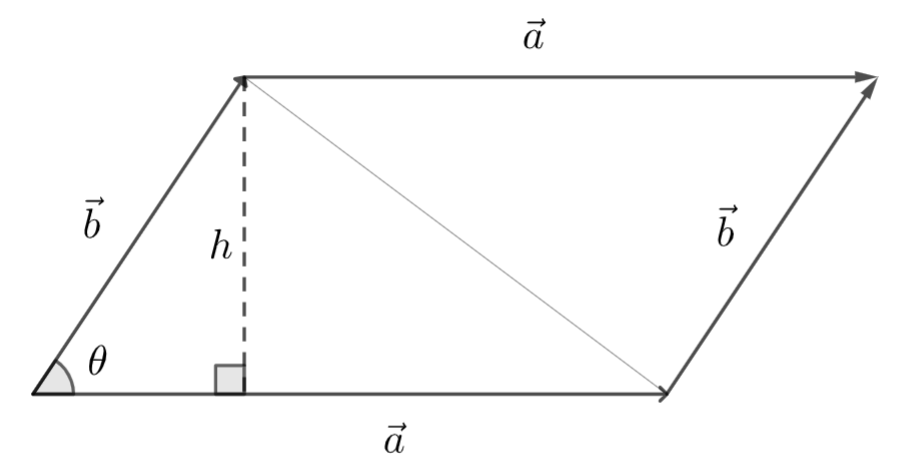
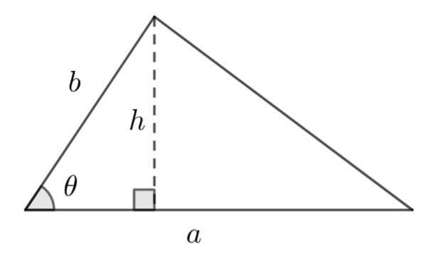

Geometriaa vektoreilla
Contents
Geometriaa vektoreilla¶
Vektorien piste- ja ristituloa voidaan hyödyntää geometrisissa ongelmissa. Ilman vektoreita on helppoa laskea esimerkiksi suorakulmaisen särmiön muotoisen linnunpöntön tilavuus, jos sivujen pituudet ovat tiedossa. Vektoreilla onnistuu kuitenkin myös sellaisten ongelmien käsittely, joissa kappaleista on tiedossa vain kärkipisteet ja joissa kappaleet voivat sijaita kolmiulotteisessa avaruudessa muutenkin kuin koordinaattiakselien suuntaisina.
Suunnikkaan ja kolmion ala¶
Suunnikkaan ala \(S\) lasketaan ilman vektoreita sivun pituuden \(x\) ja korkeuden \(h\) tulona: \(S=hx\). Jos kärkipisteet tiedetään, ala saadaan myös vektorilaskennan avulla. Tällä tavalla laskettuna ala on suorakulmion sivuvektorien \(\vec{AB}\) ja \(\vec{AD}\) ristitulon pituus, kuvan tapauksessa \(S=|\vec{AB}\times \vec{AD}|\).

Sivuvektorit lähtevät samasta kärkipisteestä suunnikkaan kahteen muuhun kärkipisteeseen. Ylläolevassa kuvassa sivuvektoreiksi käyvät \(\vec{AB}\) ja \(\vec{AD}\); \(\vec{BA}\) ja \(\vec{BC}\); \(\vec{CD}\) ja \(\vec{CB}\); \(\vec{DA}\) ja \(\vec{DC}\). Ristitulo voidaan laskea vain kolmialkioisille vektoreille. Tarvittaessa lisätään sivuvektoreihin kolmas alkio siten, että sen kerroin on 0.
Huomautus
Ristitulovektori on aina kohtisuorassa molempia ristitulon laskussa käytettyjä vektoreita vastaan. Niinpä \((x,y)\) -tasossa olevien vektorien ristitulo on aina \(z\)-akselin suuntainen. Tämä voidaan perustella yleisesti:
\(|\vec{a}\times\vec{b}|=\begin{Vmatrix} \vec{i} & \vec{j} & \vec{k} \\ a_x & a_y & 0\\ b_x & b_y & 0 \end{Vmatrix} \)
\(= (a_y\cdot 0 -b_y \cdot 0) \vec{i} - (a_x \cdot 0 -b_x \cdot 0) \vec{j} + (a_x b_y - b_x a_y) \vec{k} = (a_x b_y - b_x a_y) \vec{k}\).
Esim. Erään suunnikkaan kärkipisteiden koordinaatit ovat \(A=(1,1.5), B=(3,1.5), C=(4,3), D=(2,3)\). Laske suunnikkaan pinta-ala.

Ratkaisu
Valitaan sivuvektoreiksi \(\vec{AB}=(3-1)\vec{i}+(1.5-1.5)\vec{j}=2\vec{i}\) ja \(\vec{AD}=(2-1) \vec{i}+(3-1.5) \vec{j}=\vec{i}+1.5 \vec{j}\). Kolmialkioisiksi täydennettynä vektorit ovat \(\vec{AB}=2\vec{i}+0\vec{j}+0\vec{k}\) ja \(\vec{AD}=\vec{i}+1.5\vec{j}+0\vec{k}\).
Suunnikkaan ala on
\(|\vec{AB}\times\vec{AD}|=\begin{Vmatrix} \vec{i} & \vec{j} & \vec{k} \\ 2 & 0 & 0\\ 1 & 1.5 & 0 \end{Vmatrix} \)
\(= |(0\cdot 0-0\cdot 1.5) \vec{i}-(2\cdot 0-1\cdot 0)\vec{j}+(2\cdot 1.5-0\cdot 1) \vec{k}|=|3 \vec{k}|=3\).
Huomaa kahdet itseisarvomerkit taulukon ympärillä. Sisemmät merkit kuvaavat ristitulon laskemista, uloimmat kuvaavat ristitulosta tulokseksi saadun vektorin pituutta.
Kolmion ala \(K\) saadaan laskettua jakamalla vastaavan suunnikkaan ala kahdella. Kuvan tapauksessa \(K=\frac{1}{2} |\vec{AD}\times \vec{AB}|\).

Esim. Kolmion kärkipisteet ovat \(A=(0.5,2), B=(1.5,0.5), C=(3.5,1.5)\). Laske kolmion ala.
Ratkaisu
Valitaan sivuvektoreiksi \(\vec{AB}=(1.5-0.5) \vec{i} + (0.5-2) \vec{j} + 0 \vec{k}=\vec{i} -1.5 \vec{j} + 0 \vec{k}\) ja \(\vec{AC}=(3.5-0.5) \vec{i} + (1.5-2) \vec{j} + 0 \vec{k} = 3 \vec{i} -0.5 \vec{j} + 0 \vec{k}\).
Kolmion ala on
\(\frac{1}{2} \begin{Vmatrix} \vec{i} & \vec{j} & \vec{k} \\ 1 & -1.5 & 3 \\ 3 & -0.5 & 0\end{Vmatrix} = \frac{1}{2} |(1\cdot (-0.5)-3\cdot (-1.5)) \vec{k}|=\frac{1}{2} |4 \vec{k}|= \frac{1}{2}\cdot 4 = 2\).
Suuntaissärmiön tilavuus¶
Tilavuuksia voidaan laskea ns. skalaarikolmitulon avulla. Jos \(\vec{a}, \vec{b}\) ja \(\vec{c}\) ovat vektoreita, niin skalaarikolmitulo määritellään \((\vec{a}\times \vec{b}) \cdot \vec{c}\). Laskun tuloksena on luku (=skalaari) eikä vektori.
Tilavuuslaskuissa \(\vec{a}, \vec{b}\) ja \(\vec{c}\) ovat suuntaissärmiön sivuvektoreita, eli vektoreita suuntaissärmiön jostakin nurkasta muihin nurkkiin. Suuntaissärmiön tilavuus on skalaarikolmitulon itseisarvo.
Esim. Oheisessa suuntaissärmiössä kärkipisteiden koordinaatit ovat \(A=(1,1,1), B=(5,1,2), C=(3,7,4)\) ja \(D=(2,2,9)\). Laske kappaleen tilavuus.

Ratkaisu
Valitaan sivuvektoreiksi \(\vec{AB}=4\vec{i}+0\vec{j}+\vec{k}\), \(\vec{AC}=2\vec{i}+6\vec{j}+3\vec{k}\), \(\vec{AD}=\vec{i}+\vec{j}+8\vec{k}\).
Lasketaan skalaarikolmituloa \((\vec{AB}\times \vec{AC})\cdot \vec{AD}\) varten ristitulo \(\vec{AB}\times \vec{AC}\):
\(\vec{AB}\times\vec{AC}=\begin{vmatrix} \vec{i} & \vec{j} & \vec{k} \\ 4 & 0 & 1 \\ 2 & 6 & 3 \end{vmatrix}= \vec{i}-10\vec{j}+24\vec{k}\).
Skalaarikolmitulo, eli kappaleen tilavuus, on
\((\vec{AB}\times \vec{AC})\cdot \vec{AD}=(-6 \vec{i}-10 \vec{j} +24 \vec{k})\cdot (\vec{i}+\vec{j}+8\vec{k}) \)
\(= -6\cdot 1-10\cdot 1+24\cdot 8=176\).
Lasku onnistuisi WolframAlpha-komennolla: ((4,0,1)*(2,6,3)).(1,1,8) jossa alkuosa ((4,0,1)*(2,6,3)) laskee kahden sivuvektorin ristitulon, ja loppuosa .(1,1,8) laskee ristitulovektorin ja kolmannen sivuvektorin pistetulon.